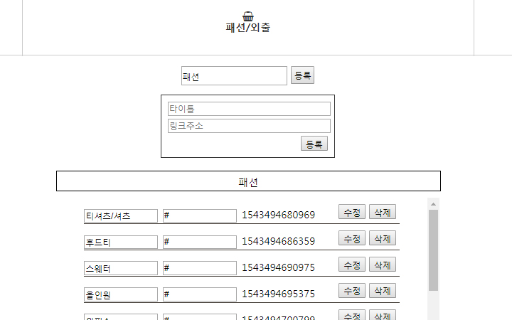
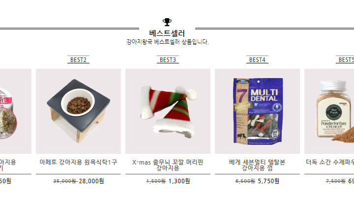

강아지 왕국 리뉴얼 홈페이지
기존에 있던 '강아지왕국' 홈페이지를
사용자 편의에 맞춰 좀 더 직관적이고 단순하게 만들었습니다.
또한, 관리자 페이지를 만들어 firebase, ajax/json방식으로 데이터를 불러올 수 있게 했습니다.
기존페이지 방문
Ajax,Firebase 를 활용한 navigation
- Navigation 중 사료,간식,영양제는 배열을 이용해서
- 목욕/미용, 배변/위생은 json 파일을 만들어서
Ajax로 가져오는 방식으로
- 식기/집, 패션/외출,장난감은 firebase 의 database를
이용해 만들었습니다.
Firebase 를 연동한 Admin page
- 관리자 페이지를 따로 만들어서
- Navigation 목록들을 등록,수정,삭제
할 수 있게 했습니다.


Firebase 로 사진,상품명, 가격까지
- Admin page에 사진, hover 후 사진
- 원래 가격, 할인된 가격을 넣을 수 있게 하여
- 쉽게 정보를 수정할 수 있도록 했습니다.